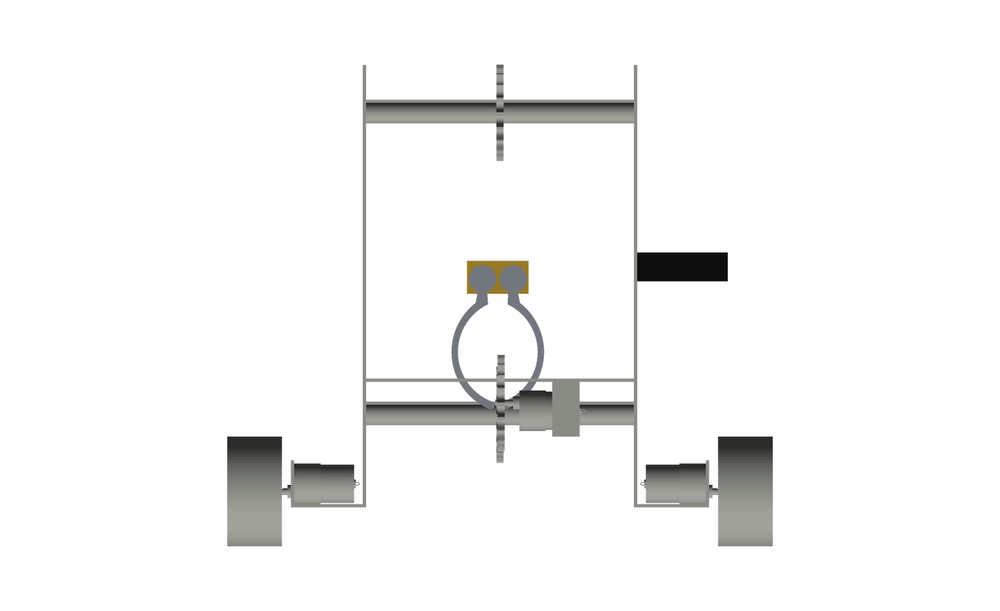

Work / Micro-Robotics club / 2025—2026
ROBONEXUS
A mecanum-wheeled robot for a capture-the-flag competition, and the software that lets it play the first 45 seconds without a driver. I led the team, designed the machine, built the simulation it was developed in, and trained the detector that finds the flags.

The problem
Two teams, two robots each, three minutes. You score by carrying flags into your own scoring zones: one point for your colour, three points for an opponent's. Knock a flag over instead of collecting it and you lose two. The first 45 seconds are fully autonomous — no driver, no radio, nothing but what the robot decides for itself.
The arena is a four-metre square split down the middle by a barrier. There are exactly two ways across, one at each end, and each opening is 600 mm wide with a roof 500 mm above the floor. That single fact shapes the whole machine: every high-value run — every steal — has to fit through a hole barely wider than the robot.
What I built
A four-wheel mecanum platform — it can strafe, which matters when you are lining up on a flag in a space too tight to turn around in. The flags are carried by three claws on a chain carousel that runs around the robot's perimeter, so it can hold more than one at a time and present an empty claw to whatever it drives up to next.
I designed the chassis, the claws and the carousel in CAD, then built the whole thing in Gazebo — arena, robot, flags, physics — so the navigation and perception could be developed and tested before any aluminium was cut. On top of that sits the autonomy: an A* planner over a map of the arena, a stereo camera for finding and ranging flags, and a state machine that decides what to go for.
Key technical decisions
The gate is a configuration problem, not a position problem. A claw sitting on the top run of the chain stands 574 mm tall, and the gate roof is at 500 mm — so the robot physically cannot cross with the carousel in the wrong position, no matter where it is on the floor. Opening the jaws drops the worst case to 469 mm and every chain position clears. So the planner does not treat a gate cell as "free"; it treats it as free in the right configuration, with a precondition the executor has to satisfy before it is allowed to drive through. The planner therefore cannot produce a route the robot is incapable of physically driving, which is the failure worth designing against.
The claws have to open to get out of their own way. The bottom run of the chain is only 81 mm above the floor and a shut claw is 135 mm tall — so a claw travelling along the bottom would drag through the floor. The carousel controller computes a safe closure from each claw's current height and clamps the command, so the claws open themselves as they come round the bottom. Getting the sign of that check backwards protects the top run and leaves the bottom unguarded, and the shut claws dig in and jack the entire robot off its wheels. I know because that is exactly what happened.
The flag detector is trained on data that does not exist. There is no footage of the competition venue — nobody on the team has seen it. So instead of collecting real images, I generated them: 5,001 labelled renders in Unity, flags scattered through a synthetic arena under varied lighting and viewpoints, exported straight into YOLO format. A YOLOv8n trained on that reaches mAP@50 of 0.940 and mAP@50-95 of 0.847 on a held-out test split.
I deliberately deleted a class from the dataset. The renders included a third class meant to stand in for opposing robots, but the stand-ins were untextured grey blobs. Nothing on the real field looks like them — while plenty of the arena does: grey pipes, grey walls, grey flag bases. A detector taught that "grey convex lump" is an obstacle fires on the barrier every single frame, and a phantom obstacle in the middle of the map is worse than no obstacle at all, because the planner already knows exactly where the fixed geometry is. Dropping the class does not throw the objects away — they stay in every image, unlabelled, which is precisely how you teach a detector that a grey lump is not a flag.
The one false positive was fixed by shape, not confidence. Tested against frames with no flags placed at all — so every detection is wrong by definition — the model produced four false positives in 24 frames, all on the purple arc painted on the arena floor. The obvious fix is to raise the confidence threshold. The better fix was a shape gate: a flag is taller than it is wide, a painted arc is not. Gating on aspect ratio removes all four false positives while keeping 29 of 36 true detections — five points more recall than a confidence threshold that achieves the same zero. And it costs nothing at range, whereas a confidence gate specifically discards the distant flags, which are the ones worth knowing about early.
Setting that threshold taught me something I keep coming back to: my first value was reasoned from the objects themselves and it only caught two of the four. An arc curving into the corner of a frame does not produce a flat bounding box — one came out nearly square. The shape of a box is not the shape of the thing inside it. The number that worked came from sweeping it against real detections, not from thinking harder.
What it taught me
The bug I am proudest of finding had no symptoms. Gazebo silently discards the mount transform on a stereo camera sensor — so the pair was rendering from the robot's origin, level, while the software believed it sat 300 mm up and tilted 29° down. Nothing errors. The images are of a real place and the transform tree is self-consistent, so both halves look correct in isolation. Range estimates still came out right, because disparity does not care about pose. Only bearing was wrong — by 275 pixels, about 32°.
The test that caught it: take a flag's known true position, push it through the transform tree into the camera frame, project it with the camera's own published intrinsics, and compare to the pixel the flag actually lands on. No amount of checking the stereo pair would ever have found it, because both cameras were wrong together. Since then I write the check that compares a prediction against ground truth before I trust anything I cannot see.
The other lesson was cheaper and more embarrassing: the CAD export assigned every part the density of steel and reported a 30.6 kg robot. The machine is aluminium. Recomputing each part's mass from its mesh volume, with catalogue figures for the motors and wheels, gives 9.51 kg — a third of what the software believed. Every simulated result before that was quietly wrong. Now I check density before I trust an exported mass.
Build
Photos & video